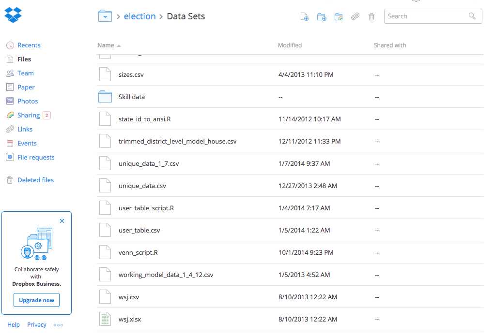
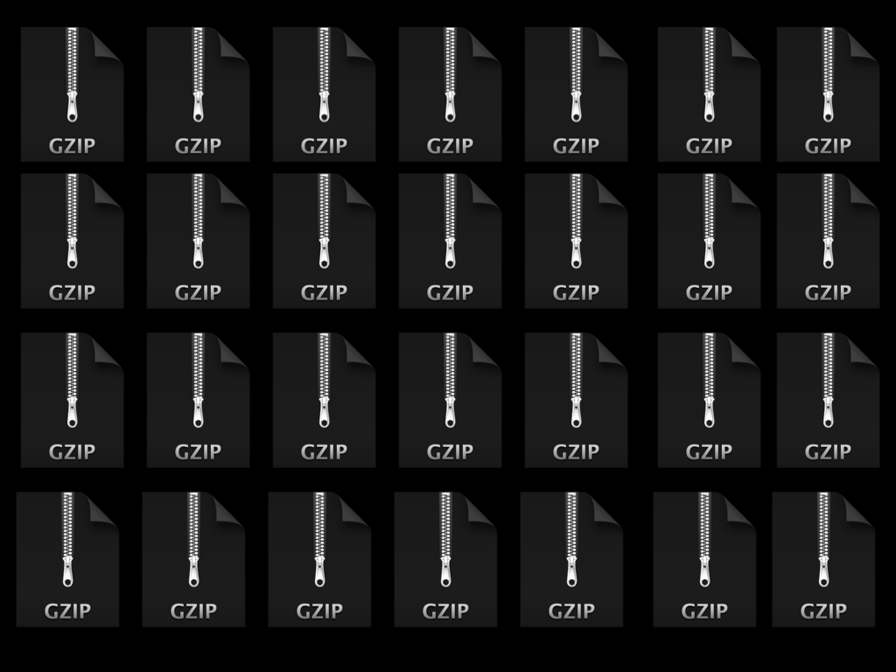
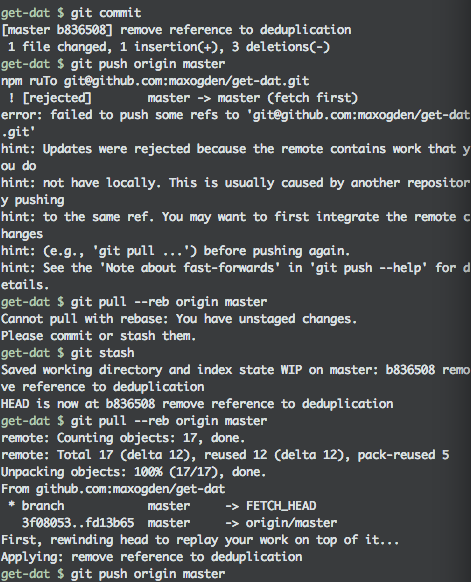

data with dat
karissa mckelvey
 dat-data.com
dat-data.com is non profit

dat-data.com is open source

How do we reproduce research today?
How do we collaborate on research today?
How do we collaborate on data analysis today?



Replicate the R analysis with raw .csv, but what about the python scripts?

:(
Manually adding files.
File sizes (100 MB)
domain experts aren't developers
domain experts aren't developers.
a domain expert, like a data scientist, will want to focus on the algorithms. the math. the people. the stars.
git is for source code, and thats ok.
git could work for 90% of the cases, but its an interface created for developers, not for domain experts.
But, we need something like git for collaborative data.
How do you build a frictionless git-like tool for collaboration?
the hardest problem we have always had is the interface to dat.
how can we make something that acts like git, but is frictionless?
frictionless
collaboration (noun)
people working together to produce or create something.
computers working together to produce or create something.
the workflow should be simple
dat beta

Not reproducible
Versioning?
Redundancy?
Forkable?
Open?
Free?
Sharing make the data available
Replication get the data and code
Version control roll back the data
Collaboration fork the data
Containerization run the code on the data
Sharing make the data avialable
$ dat link ~/path/to/myproject/data
dat://d42ca557fbdc1e2b766629c8...
 Replication
Replication get the data and code
Replicate only the data and code you need
$ dat dat://d42ca557..:path/to/file.csv
OK Karissa, give a demo
The Future
$ dat publish
Username: karissa
Password: *********